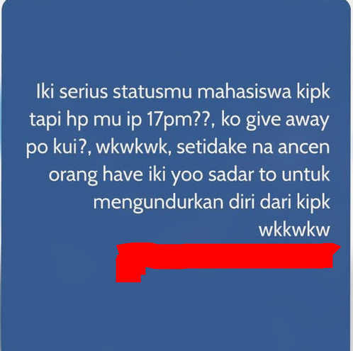
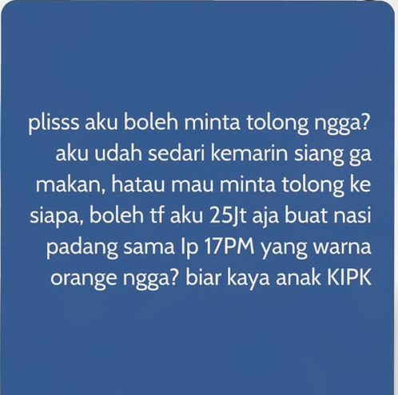

01
Tidak ada trace end-to-end
SK, rekening, dan transaksi hidup di sistem berbeda. Tidak ada satu baris dari dana cair ke merchant.
Yang publik lihat
viral · anonim

“biar kaya anak KIPK” · dar.menfess, 6 & 12 Nov 2026. Nama pengirim disensor. Postingan anonim, belum diverifikasi.
Krisis kepercayaan
Mahasiswa KIP-K dipamerkan dengan iPhone 17 Pro Max. Entah postingannya benar atau tidak, percakapannya sudah berubah: dari “apakah dia berhak?” menjadi “semua penerima KIP-K begini.”
Masalahnya bukan iPhone. Masalahnya tidak ada yang memeriksa polanya.
Studi kasus · ilustrasi
Ilham, mahasiswa KIP-K. Rp2,4 juta masuk. Dalam sepuluh hari, Rp1,8 juta keluar: taruhan kecil berulang, transfer ke satu agen, dan pembelian di Apple Store. Tidak ada yang melihat, karena kampus tidak pernah menerima mutasi.
Ilham bukan kasus tunggal. Tiga lubang membuat pola seperti ini tidak pernah terdeteksi, dan screenshot mengisi kekosongan.
01
SK, rekening, dan transaksi hidup di sistem berbeda. Tidak ada satu baris dari dana cair ke merchant.
02
Taruhan, dana habis 7 hari, tarik tunai terkonsentrasi, barang mewah, transfer berulang ke calo. Semua terlihat dari mutasi, tapi kampus tidak melihat mutasi.
03
Saat diperiksa, tidak ada cara membuktikan data yang dilihat auditor sama dengan data saat pencairan.
Kami membangun yang paling kecil yang membuat ketiganya benar. Satu dashboard untuk penyaluran dan penggunaan dana.
Scope Data mutasi hanya dari feed bank mitra (dummy di demo), bukan kampus membuka rekening. Keputusan tetap manusia.
01 · Trace
Setiap temuan membawa identitas, rekening, merchant, nominal, tanggal, dan evidence JSON. Bukan tuduhan lepas.
Sudah jalan
02 · Detect
R1-R4 untuk siapa yang menerima. T1-T5 untuk ke mana uangnya pergi. Deterministik, dengan alasan per aturan.
Sudah jalan
03 · Prove
SHA-256 dari seluruh baris penyaluran. Opsional di-anchor sebagai memo di Solana devnet. Temuan tidak pernah on-chain.
Sudah jalan
Feed bank mitra mengirim transaksi penerima. Lima pola ditandai, dengan bukti dan alasan. Tidak ada blokir otomatis.
T1 0.50
Setoran ke merchant atau agen taruhan.
T2 0.30
Enam puluh persen dana keluar dalam sepekan.
T3 0.15
Empat puluh lima persen dana ditarik tunai.
T4 0.20
Pembelian di atas Rp1,5 juta di merchant mewah, mis. Apple Store.
T5 0.25
Transfer berulang ke satu penerima, minimal tiga kali.
Dari temuan ke bukti
Klik satu temuan: merchant, nominal, tanggal. Lalu lihat running balance, grafik harian, dan kategori pengeluaran.
Evaluasi data sintetis: P@10 1.00 · recall 0.88 · FP 1.5% pada 17 pola ditanam. Feed bank masih dummy; hasilnya rujukan verifikasi, bukan tuduhan.
215 record, 15 temuan. Empat aturan R1-R4.
5.411 transaksi, 20 temuan, 5 prioritas tinggi.
T1-T5, ~67 ms. Lima pola deterministik.
T1+T2: empat transaksi taruhan, mayoritas dana keluar dalam 7 hari.
Running balance, grafik harian, kategori, dan mutasi lengkap.
Status berubah. Publik hanya melihat agregat dan hash batch.
Kami memakai chain untuk membuktikan data, bukan untuk menyimpan data. Perbedaan ini yang membuat produk bisa dipatuhi.
UU PDP 27/2022
NIK, NIM, nomor rekening, nominal, dan merchant tidak boleh masuk ledger publik. Satu hash tidak membocorkan isi batch.
Right to erasure
Data yang tidak bisa dihapus adalah compliance trap, bukan fitur. Hash-only tetap tamper-evident tanpa menyimpan PII.
Due process
Tuduhan on-chain tidak bisa ditarik. Temuan penyaluran dan penggunaan tidak pernah menyentuh chain.
Frontend
Preact + Vite
Penyaluran · penggunaan dana · halaman publik
Core API
Go :8080
Data
Postgres 16
students · accounts · disbursements · transactions · findings
Kami tidak menghakimi dari screenshot. Kami memeriksa pola dari feed bank mitra, dengan bukti yang bisa diverifikasi.
Tidak
Data mutasi hanya dari feed bank mitra, bukan kampus mengintip rekening. Demo memakai data dummy; produksi butuh perjanjian berbagi data + dasar hukum.
Tidak
Temuan masuk antrean review. Tidak ada aksi otomatis terhadap pencairan atau rekening mahasiswa.
Tidak
Aturan deterministik. Threshold konservatif: salah tuduh lebih mahal daripada telat menemukan.
Tidak
salah_deteksi adalah status kelas satu. Koreksi tercatat, bukan stigma.
Kemendikbud / KIP-K
Akuntabilitas anggaran dan jawaban saat publik bertanya.
Kampus
Penyaluran dan pola penggunaan, bukan sampling buta.
Mahasiswa
Koreksi tercatat, bukan stigma. Dana tidak pernah diblokir otomatis.
Bank / regulator
Bukan akses langsung. Audit hash-only, siap diperiksa.
Roadmap
Feed bank produksi (SNAP) · Isolation Forest · Merkle proof per record · Portal consent
Kami tidak menghakimi screenshot. Kami memeriksa pola. Manusia yang memutuskan.